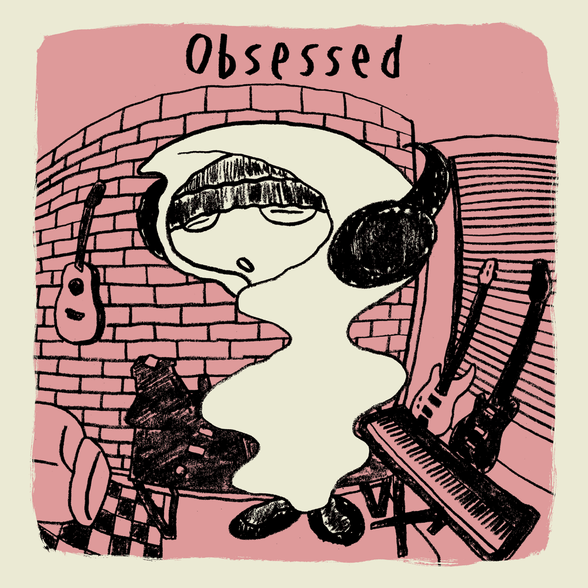

Obsessed

Song by: Ayumu Imazu
Lyrics
"You got to let go" (yeah, yeah)
Maybe it's a little too late
'Cause I already put my all to the table
Everything about me from the get go (I wanted that)
There goes another love song (la-la-la)
Hate that it's becoming my usual (usual)
Taking things slow, I just can't control
Baby, I'm incapable of it
Then one day (you show up)
You show up like heaven sent you here
So I say (hello), how you doin' nice to meet you
All my friends (no, no) are telling me, she might be bad news
Now I can't go back
Yeah, you know I'm caught up in you
I get obsessed so easily
Like honestly what the fuck is wrong with me
I go two nights out with a girl and I think I'm in love (in love, in love)
Why do I fall so easily
Or is it that she's so perfect for me
I can't keep on meeting the love of my life like this
But I guess I'm obsessed with you (yeah, yeah)
You, you
Think I'm doing better (yeah, yeah)
Took a little but I got my head on (straight)
Finally, takin a good care of me myself and
I don't wanna wait no more (uh huh)
Trying everything I can like meditating
Keeping myself busy down to every second
So I don't have time to fantasize
What could've been like you and I
But then again (you show up)
You show up like heaven sent you here
So I say (hello), how you doin' nice to meet you
Is all the blame on me 'cause you can't deny your natural beauty
Now I can't go back
Yeah, you know I'm caught up in you
I get obsessed so easily
Like honestly what the fuck is wrong with me
I go two nights out with a girl and I think I'm in love (in love, in love)
Why do I fall so easily
Or is it that she's so perfect for me
I can't keep on meeting the love of my life like this
But I guess I'm obsessed with you (yeah, yeah)
You, you
I get obsessed so easily
Like honestly what the fuck is wrong with me
I go two nights out with a girl and I think I'm in love
And why do I fall so easily
Or is it that she's so perfect for me
I can't keep on meeting the love of my life like this
But I guess I'm obsessed with you (yeah, yeah)
You, you (la-da-di-la-la, du-du-du-du-du-du-du-du-du-du-ru)
You, you
Source:LyricFind
Songwriters: Ayumu Imazu
Obsessed lyrics © Sony/ATV Music Publishing LLC